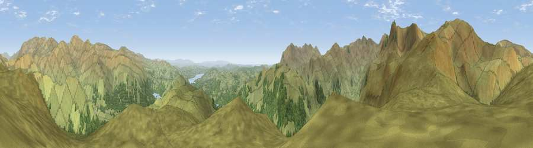

Viewpoint near Chapel Stile
#3996 in England · top 27% of its area beats it · near Chapel StileThe view, rendered

A 360° render of this exact spot computed from the terrain model, tree cover and land cover — summer colours, afternoon light, calibrated against photographs of famous viewpoints. Real trees, hedges and buildings will differ in detail.
The panorama
Grey silhouette: terrain skyline in each direction (720 bearings, Earth curvature and refraction included). Dashed green: skyline with trees (+15 m) and buildings (+8 m) as obstacles. Blue strip: how far the ground is visible on each bearing.
Where the view opens
Wedge length = distance to the farthest visible ground on that bearing (vegetation-aware). Rings at 10, 25 and 50 km.
What fills the view
90% grassland · 10% woodland
Angular shares of the visible panorama (visual magnitude), not map area. Landscape diversity 0.15 (0–1 Shannon).
Key numbers
More beautiful places nearby
The staircase of upgrades: each row has a higher view potential than everything closer. Driving times are estimates from straight-line distance, calibrated against real road routing — check an actual route before setting out.
| Place | Direction | Drive | Score |
|---|---|---|---|
| Blea Rigg | WNW · 1 km | ~2 min | 72.7 |
| Codale Head | NW · 2 km | ~6 min | 75.0 |
| Viewpoint near Chapel Stile | W · 3 km | ~7 min | 75.7 |
| High Raise | NW · 3 km | ~8 min | 76.2 |
| Viewpoint near Grasmere | E · 5 km | ~11 min | 78.6 |
| Viewpoint c10128_6489 | W · 6 km | ~13 min | 82.7 |
| Viewpoint near Legburthwaite | NNE · 8 km | ~17 min | 83.8 |
| Viewpoint near Legburthwaite | NNE · 8 km | ~17 min | 84.5 |
54.45882, -3.06935 · source: screening · position refined by local search. Computed location — check access rights before visiting.